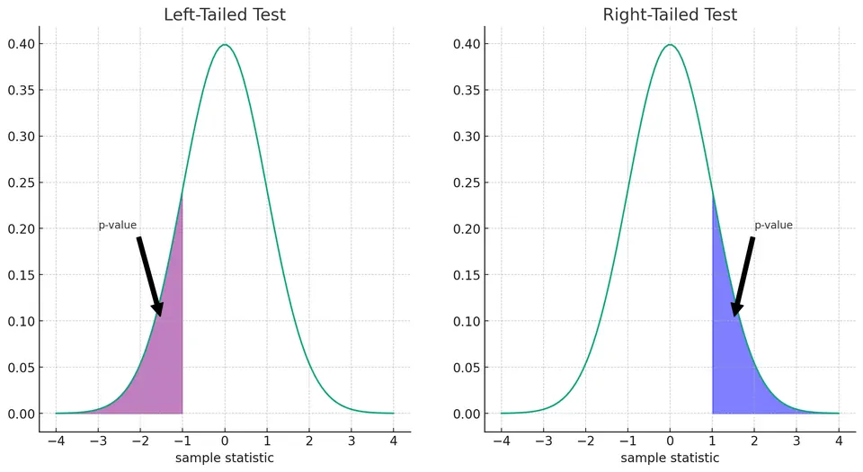

Hypothesis testing is a statistical tool used to draw conclusions about populations based on sample data. It is widely applied in scientific research, from evaluating new treatments in clinical trials to studying customer behavior in business analytics.
A hypothesis is a statement about a population or statistical model that can be evaluated using data.
Inputs:
Output:
The p-value is the probability, assuming the null hypothesis is true, of obtaining a test statistic at least as extreme as the one observed. A small p-value, typically $p \leq \alpha$, provides evidence against the null hypothesis.
Hypothesis testing follows a structured process:
Imagine two bags: Bag A contains 5 white and 5 black marbles, while Bag B contains only black marbles.
Bag A Bag B
_____ _____
/ • • \ / O O \
| • • | | O O | O = Black Marble
| O O | | O O | • = White Marble
| O O | | O O |
| • O | | O O |
\_____/ \_____/Suppose you want to test whether the bag is Bag B:
If we draw n marbles independently with replacement and they are all black, we can evaluate how likely this result would be under $H_0$.
For Bag A, the probability of drawing a black marble is 0.5. Therefore, the probability of drawing n black marbles in a row is:
$$ (0.5)^n $$
A smaller p-value provides stronger evidence against $H_0$. As n increases, observing only black marbles becomes increasingly difficult to explain if the bag is Bag A.
When testing a population mean, three common forms of hypotheses are used.
I. Left-Tailed Test
$$ \mu=\mu_0 $$
$$ \mu<\mu_0 $$
II. Right-Tailed Test
$$ \mu=\mu_0 $$
$$ \mu>\mu_0 $$
III. Two-Tailed Test
$$ \mu=\mu_0 $$
$$ \mu\neq\mu_0 $$
The alternative hypothesis determines whether the test examines values below, above, or on either side of $\mu_0$.
Important Note: Left-tailed and right-tailed tests are appropriate when the research question specifies a meaningful direction in advance. A two-tailed test is used when departures in either direction are relevant.
I. Testing the Effectiveness of a New Diet (Two-Tailed Test)
$$ \mu\neq\mu_0 $$
II. Evaluating Customer Service Efficiency (Left-Tailed Test)
$$ \mu=10 $$
$$ \mu<10 $$
III. Assessing the Impact of a New Teaching Method (Right-Tailed Test)
$$ \mu=75 $$
$$ \mu>75 $$
After collecting the data and calculating the test statistic, the researcher computes the p-value.
The p-value is the probability, assuming the null hypothesis is true, of obtaining a test statistic at least as extreme as the one observed.

For a two-tailed test, extreme values in both directions are considered.
Here, "at least as extreme" means values at least as inconsistent with $H_0$ as the observed result, according to the alternative hypothesis.
Selecting an appropriate statistical test depends on the type of data, research question, study design, and assumptions.
The following table summarizes some common statistical tests and their applications:
| Test | Data Type | Number of Groups | Assumptions |
|---|---|---|---|
| T-Test | Interval/Ratio | Two | Independent groups; approximate normality within groups |
| Paired T-Test | Interval/Ratio | Two | Paired observations; approximate normality of differences |
| One-way ANOVA | Interval/Ratio | More than Two | Independent observations; approximate normality; similar group variances |
| Two-way ANOVA | Interval/Ratio | Multiple groups defined by two factors | Independent observations; approximate normality; similar group variances |
| Chi-Square Test | Categorical | Two or more categories | Independent observations; sufficiently large expected counts |
| Pearson Correlation | Interval/Ratio | Two variables | Linear relationship; inference commonly assumes approximate bivariate normality |
| Spearman Correlation | Ordinal/Continuous | Two variables | Monotonic relationship |
| Mann-Whitney U Test | Ordinal/Continuous | Two | Independent samples |
| Kruskal-Wallis H Test | Ordinal/Continuous | More than Two | Independent samples |
| Wilcoxon Signed-Rank Test | Ordinal/Continuous | Two | Paired samples; symmetric distribution of differences |
| Friedman Test | Ordinal/Continuous | More than Two | Repeated or matched samples |
An agronomist suggests that a new fertilizer increases the average yield of a particular crop to more than 2 tons per hectare. To test this claim, the fertilizer is applied to randomly selected plots.
The yield of 25 plots is measured, giving:
Hypothesis Setup:
$$ \mu=2 $$
$$ \mu>2 $$
Test Statistic:
Because the population standard deviation is unknown and is estimated using the sample standard deviation, we use a one-sample t-test:
$$ t=\frac{\bar{x}-\mu_0}{s/\sqrt{n}} $$
where:
Plugging in the values:
$$ t=\frac{2.1-2}{0.3/\sqrt{25}} $$
$$ t=\frac{0.1}{0.06} $$
$$ t\approx1.667 $$
The test has:
$$ df=n-1=24 $$
For a right-tailed test with $\alpha=0.05$ and 24 degrees of freedom, the critical value is approximately:
$$ t^*\approx1.711 $$
Since:
$$ 1.667<1.711 $$
we fail to reject the null hypothesis.
There is not sufficient evidence at the $\alpha=0.05$ significance level to conclude that the fertilizer increases the average yield above 2 tons per hectare.
A statistically significant result does not necessarily imply a practically meaningful one. Effect size describes the magnitude of a difference or relationship and helps assess whether an observed effect is large enough to matter in practice.
Cohen's $d$ is a commonly used effect-size measure for comparing two means. It expresses the difference between the means in units of the pooled standard deviation:
$$ d = \frac{\bar{x}_1 - \bar{x}_2}{s_p} $$
where $s_p$ is the pooled standard deviation:
$$ s_p = \sqrt{\frac{(n_1 - 1) s_1^2 + (n_2 - 1) s_2^2}{n_1 + n_2 - 2}} $$
Common benchmarks for interpreting $|d|$ are:
| $d$ | Interpretation |
|---|---|
| 0.2 | Small effect |
| 0.5 | Medium effect |
| 0.8 | Large effect |
These values are rough conventions rather than universal thresholds.
Because the p-value depends on both the size of the effect and the amount of data, a large sample can produce a statistically significant result even when the effect is small. Reporting an effect size alongside the p-value gives a more complete picture of the findings.